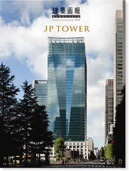

|

|
建築画報 MONOGRAPH
JP TOWER
建築画報MONOGRAPHシリーズ第二弾として、東京丸の内に誕生した「JPタワー」を一冊まるごと特集。建築、構造、設備の情報を詳細に解説し、設計者、施工者の両面からJPタワーをひも解く。早稲田大学特命教授 伊藤滋氏、日本郵政取締役兼代表執行役副社長 長島俊夫氏、前・三菱地所設計代表取締役副社長 岩井光男氏の3名による巻頭鼎談を掲載。
Visual Architecture 354
April 18 2013 vol.49
建築画報354号
2013年4月18日発刊
本文160ページ
仕様 A4変形判
定価 3,300円（税込）
ISBN978-4-901772-73-0
|
|
|
建築画報 Vol.354 目次
006 巻頭文｜丸の内の新時代へ｜古川洽次
Prefatory Note｜Toward a New Era for Marunouchi by Koji Furukawa
008 座談会｜まちの過去と未来をつなぐもの｜伊藤滋 長島俊夫 岩井光男
Discussion｜A Building Bridges Marunouchi's Past and Future
by Shigeru Ito, Toshio Nagashima and Mitsuo Iwai
018 寄稿｜ふたつのランドマーク｜有山伸司
Project Partner Message｜Two Landmarks by Shinji Ariyama
019 寄稿｜グローバル都市の新たな価値として｜田島穣
Project Partner Message｜Adding New Value to the Global City by Yutaka Tajima
021 論文｜JPタワーの設計コンセプト｜佐藤和清・宮地弘毅
Essay｜Design Concept of JP Tower by Kazukiyo Sato and Koki Miyachi
025 論文｜日本郵政グループの不動産開発｜日本郵政株式会社・日本郵便株式会社
Essay｜The Real Estate Development of the Japan Post Group by Japan Post Group
──
029 1｜都市の中の建築
Architecture in the City
038 1-1｜丸の内のキーストンプロジェクト
Keystone Project in Marunouchi
046 1-2｜街並みを形成するための計画手法
Planning Methods for Creating a Cityscape
048 1-3｜都市の環境負荷を低減する
Reducing the City's Environmental Load
049 1-4｜都市災害への対応
Response to Urban Area Disasters
050 1-5｜景観の歴史｜東京中央郵便局舎と東京駅前広場
History of Landscape ｜The Former Tokyo Central Post Office and Tokyo Station Plaza
052 1-6｜歴史との対比｜新しい都市景観の創出
Contrasts with History｜Creation of a New Urban Landscape
054 1-7｜外装デザインの検討プロセス
Process of Creating the Exterior Design
056 1-8｜都市の憩いの場を創出するランドスケープデザイン
Landscape Design that Creates a Place of Recreation in the City
062 1-9 都市の夜景を彩る｜エクステリアライティングデザイン
Engaging the City Skyline at Night｜Exterior Lighting Design
──
065 2｜建築の中の都市
The City in Architecture
074 2-1｜複合施設のプランニング
Planning for the Multi-purpose Facility
076 2-2｜自然エネルギーを活用したアトリウム
Atrium That Makes the Best Use of Natural Energy
078 2-3｜商業施設のデザインコンセプト
Design Concept of the Commercial Facility
084 2-4｜郵便局｜旧公衆室の保存と活用
Post office｜Preserving and Making Use of the Former Public Lobby
088 2-5｜JPタワーホール&カンファレンス
JP Tower Hall & Conference
090 2-6｜JPタワー学術文化総合ミュージアム「インターメディアテク」
JP Tower Museum Intermediatheque
092 2-7｜観光・ビジネス情報センター（東京シティアイ）
Tokyo City i Tourist and Business Information
──
093 3｜最先端ワークプレイス
State-of-the-art Workplace
102 3-1｜最先端のワークプレイス
A State-of-the-art Workplace
104 3-2｜執務環境性能と環境負荷低減の両立
An Optimal Working Environment but with Less Environmental Load
106 3-3｜オフィスのホスピタビリティ
Office Hospitality
110 3-4｜エントランスロビーのインテリア
Interior Design of the Entrance Lobby
114 3-5｜外装ディテール
Detail of the Exterior Design
120 3-6｜災害時にも持続する機能
Business Continuity Planning (BCP) That Sustains Operation at in Time of Disaster
122 3-7｜最先端のワークプレイスを支える構造技術
Structural Design That Supports a State-of-the-art Workplace
126 3-8｜最先端のワークプレイスを支える幹線設備
Trunk Line Network That Supports a State-of-the-art Workplace
128 3-9｜バリアフリーとユニバーサルデザイン
Barrier-free and Universal Design
──
129 4｜保存復原と施工技術
Preservation, Restoration and Construction Technology
134 4-1｜調査
Preliminary Survey
138 4-2｜保存の方針と概要
Preservation Guidelines and Overview
140 4-3｜保存工事
Preservation Work
144 4-4｜保存棟施工計画
Construction Plan of the Preserved Buildings
146 4-5｜躯体再アルカリ化工事
Realkalizing the Concrete Framework
148 4-6｜タイル乾式レール工法
Rail Fixing Dry Method
150 4-7｜免震エキスパンションジョイント
Seismic Expansion Joints
──
154 図面
Drawings
──
159 データシート
160 執筆者紹介
──